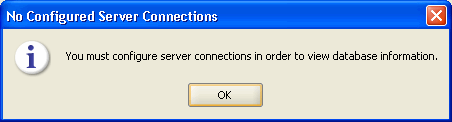
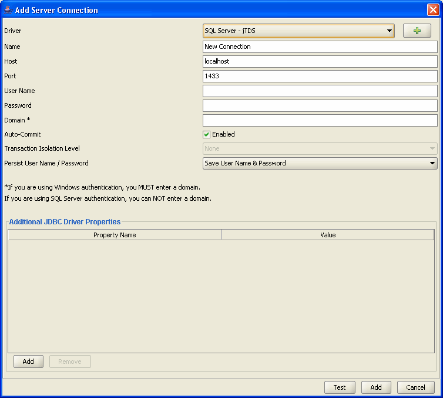
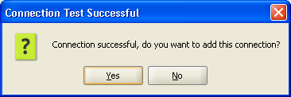
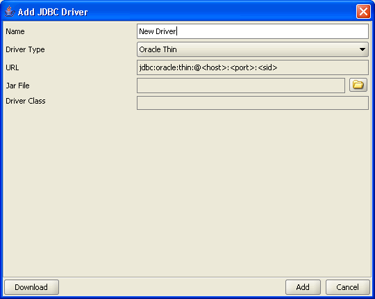
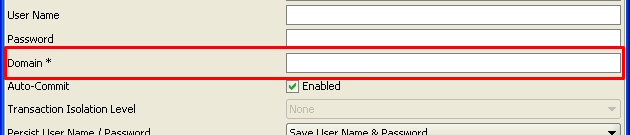

You must configure a server connection in order to view database information. Below message will be displayed when DB Solo is first started or if a database server has not been configured.

Figure - No Configured Server Connections
Choosing OK will bring up the Add Server Connection screen as displayed below.
Note: This screen will also be displayed when you right click Server, on DB Solo's main window, and choose the Add Server button.

Figure - Add Server Connection
Note: If you are using DMBS for which there is no bundled driver, the appropriate driver needs to be added. Click on the Plus sign next to the Driver field and proceed to Adding (Java Database Connectivity) JDBC Driver.

Figure - Connection Test Successful
DB Solo uses JDBC drivers to communicate with your database server. This means you will need to add the appropriate driver unless you are using one of the drivers bundled with DB Solo.
DB Solo comes bundled with a jTDS open source JDBC driver .jar file that works with Microsoft SQL Server and Sybase Adaptive Server Enterprise (ASE) databases. DB Solo also comes with drivers for Oracle, MySQL, SQLite, PostgreSQL and DB2.
If you are connecting to a DBMS for which there is no bundled driver or if you wish to use the generic JDBC driver feature, you will need to download the drivers from their vendor's website.

Figure - Add JDBC Driver
The Oracle thin driver is a pure Java JDBC driver and does not require Oracle client software to be installed. With this driver you can connect to SID
or service name based server installations. To connect using a SID, just enter the SID in the corresponding field. To connect to a service name, use the following
notation:
/myservice
where 'myservice' is the service name you wish to use.
The Oracle OCI driver requires a locally installed Oracle client software to work properly. Notice that this driver will only work with Oracle 10g client software, version 9 or earlier will not work. With this driver you only need to supply values for username, password and service name. The service name must map to an entry in your locally installed TNSNAMES.ORA file.
MySQL JDBC driver is bundled with DB Solo, so you can create a new MySQL server connection that uses the driver without having to perform any additional downloads.
Cassandra driver is bundled with DB Solo, so you can create a new Cassandra server connection that uses the driver without having to perform any additional downloads.
The Vertica JDBC driver is not bundled with DB Solo, so you must download it from the HP Vertica site first. After downloading the driver jar file, add a new driver and select 'Vertica' as the driver type and point to the jar file you downloaded.
SQL Server connections use jTDS pure Java JDBC driver. It is possible to connect to servers using either SQL Server authentication or Windows authentication. To connect using Windows authentication, enter the name of the domain in the 'Domain' entry field. Notice that you have to enter your username and password even when you are already logged into the correct domain. If you are using SQL Server authentication, you must leave the 'Domain' field blank.

To connect to an instance, you can use of the following two notations in the 'Host' field:
\host\instance
\\host\instance
where host is the host name and instance is the name of the instance you want to use.
The standard DB2 driver is a pure Java JDBC driver that does not need locally installed client software unlike the Type 2 driver. For this connection type, you have to enter the standard connection attributes; host, port, user, password and the database.
The Type 2 driver requires that you have installed native code DB2 client software (Runtime client/Application development client) on the computer you are trying to connect from. As a result of this, you only have to enter the database/alias name of the server you want to connect to, you don't have to set the host or port. For this driver type, the username and password are optional, if you don't supply them the the OS credentials from your local system will be used. Notice that you need to enter both username and password, or leave both blank.
Using the Type 2 driver is also recommended if your database server is on the same machine as your DB Solo client software.
To connect to an H2 database, you need to use the generic JDBC driver type. As long as the supplied JDBC URL starts with 'jdbc:h2' DB Solo will recognize the connection as an H2 connection.
Below you can find some of the most common error messages you would receive when trying to a connect to a particular database, including the most likely cause of the error.
Io exception: The Network Adapter could not establish the connection. The host name, IP address or port is not correct or Oracle is not running on that server.
Listener refused the connection with the following error: ORA-12505, TNS:listener does not currently know of SID given in connect descriptor. TNS listener is running on the specified host, but does not know of the SID that was specified
Listener refused the connection with the following error: ORA-12514, TNS:listener does not currently know of service requested in connect descriptor. TNS listener is running on the specified host, but does not know of the service name that was specified
ORA-28009: connection to sys should be as sysdba or sysoper. You're trying to connect as 'sys' but you have not entered 'sys as sysdba' in the user field.
ORA-01017: invalid username/password; logon denied. Either the user name or password is incorrect.
Null user or password not supported in THIN driver. You have left either the user name or password field blank.
Unknown server host name 'hostname'. You're trying to connect to an unknown host.
Network error IOException: Connection refused: connect. The host name, IP address or port is not correct or Sybase is not running on that server.
Login failed. Incorrect user name or password.
Unknown server host name 'hostname'. You're trying to connect to an unknown host
Network error IOException: Connection refused: connect. The host name, IP address or port is not correct or SQL Server is not running on that server.
Error connecting to the database. Unable to get information from SQL Server: myhost. When connecting to named instances jTDS needs to connect via UDP to port 1434 to get information about available SQL Server instances. While doing this it times out, throwing the exception you see (which means that jTDS was not able to get information about the running instances). Connection timeouts occur when there is no server listening on the port. On SQL Server 2005 the SQL Browser service must be running on the server host as the instance name lookup port UDP 1434 is hosted by this service on SQL Server 2005 rather than the SQL Server itself. The default install does not configure the SQL Browser service to start automatically so you must do it manually. You must start it in Control Panel / Services.
Login failed for user 'user'. Incorrect user name or password.
Communications link failure due to underlying exception: Connection timed out: connect. The server is not up or there is no route to it.
Communications link failure due to underlying exception: java.net.UnknownHostException. The host name is not known.
Access denied for user '<user>'@'<host>' (using password: YES). The user name or password is incorrect or the user is not allowed to connect from the host you're trying to connect from.
Access denied for user '<user>'@'<host>' (using password: NO). You have not specified a password, either it's required or the user name is incorrect or the user is not allowed to connect from the host you're trying to connect from.
Required property "serverName" is unknown host. You're trying to connect to an unknown host
Error opening socket to server <host>/<ip> on port 50,000 with message: Connection refused: connect. The host name, IP address or port is not correct or DB2 is not running.
port out of range: The specified port number may be out of range.
SQL30082N Attempt to establish connection failed with security reason "3" ("PASSWORD MISSING"). SQLSTATE=08001. You have not specified a password, but it is required.
Connection authorization failure occurred. Reason: User ID or Password invalid. Incorrect user name or password.
The application server rejected establishment of the connection. An attempt was made to access a database, databasename, which was not found. The specified database does not exist on the server.
The connection attempt failed. You're trying to connect to an unknown host, server is not up or there is no route to it
Check that the hostname and port are correct and that the postmaster is accepting TCP/IP connections. The specified server is up, but postgres is not running on it. This could be due to an incorrect host name or port.
Something unusual has occured to cause the driver to fail. Please report this exception. The specified port number may be out of range.
FATAL: password authentication failed for user "user". Incorrect user name or password.
FATAL: database <database> does not exist. The specified database does not exist on the server.
Connection is broken [90067-44]. You're trying to connect to an unknown host, server is not up or there is no route to it.
Wrong user/password [08004-44]. Incorrect user name or password.
Database <database> not found [90013-44]. The specified database does not exist on the server.
| Back to Index |
DB Solo www.dbsolo.com support@dbsolo.com |